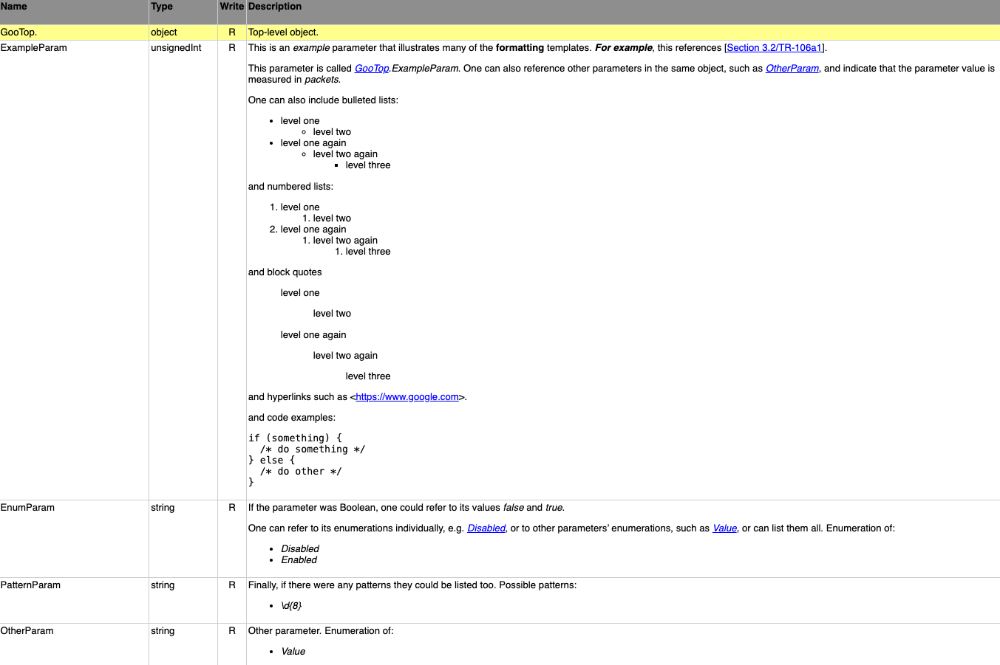

Annex A: CWMP Data Model Definition XML Schema 
A.1 Introduction
The CWMP Data Model Definition XML Schema [4], or DM Schema, is used for defining CWMP [1] and USP [2] data models, and is specified in A.2.12.6.
DM Schema instance documents can contain any or all of the following:
Data type definitions
Root Object definitions (including profiles)
Service Object definitions (including profiles)
Component definitions
Vendor extension definitions
Annex C contains some additional normative requirements that apply only to BBF standard DM Schema instance documents.
Most of the data model elements are common to CWMP and USP. Those that are specific to either protocol will be noted in the description.
A.1.1 Character Encoding and Character Set
BBF standard DM Schema instance documents use UTF-8 encoding and their character set is restricted to printable ASCII characters. See C.2 for the corresponding normative requirements.
A.2 Normative Information
It is possible to create instance documents that conform to the DM Schema but nevertheless are not valid data model definitions. This is because it is not possible to specify all the normative data model definition requirements using the XML Schema language. Therefore, the schema contains additional requirements written using the usual normative language. Instance documents that conform to the DM Schema and meet these additional requirements are referred to as DM Instances.
For example, the definition of the parameter element includes the following additional requirements on the name and base attributes:
<xs:complexType name="ModelParameter">
<xs:annotation>
<xs:documentation>
Parameter definition and
reference.
</xs:documentation>
</xs:annotation>
...
<xs:attribute name="name" type="tns:ParameterName">
<xs:annotation>
<xs:documentation>
MUST be unique within the parent object
(this is checked by schema validation).
MUST be present if and only if defining a new
parameter.
</xs:documentation>
</xs:annotation>
</xs:attribute>
<xs:attribute name="base" type="tns:ParameterName">
<xs:annotation>
<xs:documentation>
MUST be present if and only if modifying an existing
parameter.
</xs:documentation>
</xs:annotation>
</xs:attribute>
...
</xs:complexType>In some cases, a requirement that is in fact implied by the DM Schema is emphasized within the schema via the xs:documentation element (the uniqueness requirement on the name is an example of this).
In other cases, a schema-implied requirement is not highlighted. For example, the name and base attributes are of type tns:ParameterName:
<!DOCTYPE cwmp-datamodel [
...
<!ENTITY name "([\i-[:]][\c-[:\.]]*)">
...
]>
...
<xs:simpleType name="ParameterName">
<xs:annotation>
<xs:documentation>Parameter name (maximum length 256); the same as xs:NCName except that periods are not permitted. This name MUST in addition follow the vendor-specific parameter name requirements of Section 3.3.</xs:documentation>
</xs:annotation>
<xs:restriction base="xs:token">
<xs:maxLength value="256"/>
<xs:pattern value="&name;"/>
</xs:restriction>
</xs:simpleType>This states that the parameter name is a string that follows the following rules:
It is derived from xs:token, which has a whitespace facet of “collapse”, meaning that any leading whitespace in the name will be ignored.
It has a maximum length of 256 characters.
Its first character matches the pattern “
[\i-:]]”, which means “any character permitted as the first character of an XML name, except for a colon”, and any subsequent characters match the pattern “[\c-[:\.]]”, which means “any character permitted in an XML name, except for a colon and a dot”.It follows the vendor-specific parameter name requirements of Section 3.3.
The question of the location of the definitive normative information therefore arises. The answer is as follows:
All the normative information in the main part of the document remains normative.
The DM Schema, and the additional requirements therein, are normative. Some of these additional requirements are duplicated (for emphasis) in this Annex.
The DM Schema references additional material in this Annex. Such material is normative.
If the DM Schema conflicts with a normative requirement in the main part of the document, this is an error in the DM Schema, and the requirement in the main part of the document takes precedence.
A.2.1 Importing DM Instances
DM Instances are imported using the top-level import element. The DM Schema specifies that the DM Instance is located via the file attribute.
The rules governing the file attribute’s value and its use for locating the DM Instance are as follows:
It MUST be a URL adhering to RFC 3986 [9].
If the URL includes a scheme, it MUST be http, https or ftp.
If the URL includes an authority, it MUST NOT include credentials.
For standard BBF DM Instances, the rules that apply to the filename part (final path segment) of the A.2.1.1 BBFURL also apply to the filename part of this URL. This means that the corrigendum number can be omitted in order to refer to the latest corrigendum. See C.3.6 for the corresponding normative requirement.
If the URL is a relative reference, processing tools MUST apply their own logic, e.g. apply a search path.
A.2.1.1 URI Conventions
The top-level spec attribute contains the URI of the associated specification document, e.g. the BBF Technical Report.
This URI SHOULD uniquely identify the specification. More than one DM Schema instance document MAY reference the same specification.
The top-level file attribute contains the name of the DM Schema instance document, e.g. the XML file that defines a given version of a data model.
The following rules apply to the value of the top-level spec attribute:
For a BBF Technical Report, it will be of the form “
urn:broadband-forum-org:tr-nnn-i-a-c”, where nnn is the specification number (including leading zeros), i is the issue number, a is the amendment number, and c is the corrigendum number. The issue, amendment and corrigendum numbers do not include leading zeros. For example, “urn:broadband-forum-org:tr-106-1-0” refers to TR-106 (Issue 1 Amendment 0), and “urn:broadband-forum-org:tr-106-1-2” refers to TR-106 (Issue 1) Amendment 2. See C.3.4 for the corresponding normative requirement.For specifications issued by other standards organizations, or by vendors, it SHOULD be of a standard form if one is defined. For example, RFC 2648 [11] specifies a syntax for referencing RFCs.
Note that processing tools are likely to assume that all files that share a spec value are related to each other. Therefore, use of meaningful spec values is RECOMMENDED.
The following rules apply to the value of the top-level file attribute.
For a BBF Technical Report, it will be of the form “
tr-nnn-i-a-c.xml” or “tr-nnn-i-a-c-label.xml”, where nnn, i, a and c are the same as in the spec attribute. The label, which MUST NOT begin with a digit, is not needed if only one DM Schema instance document is associated with the specification. See C.3.5 for the corresponding normative requirement.It SHOULD be the same as the actual file name (omitting the directory name). Under some circumstances this will not be possible, e.g. because the content is stored in a database and not in a file system.
Formally, the values of the spec and file attributes are defined as follows:
SpecAttr = SpecURI
FileAttr = FileName
SpecURI = BBFURI
| OtherURI
BBFURI = "urn:broadband-forum-org:" BBFDoc
FileName = BBFDoc BBFSubDoc ".xml"
BBFDoc = "tr-" BBFNumber BBFIssue BBFAmendment BBFCorrigendum
BBFNumber = [DIGIT]{3,} // including leading zeros, e.g. 069
BBFIssue = "-" NoLeadingZeroPositiveNumber
BBFAmendment = "-" NoLeadingZeroNumber
BBFCorrigendum = "-" NoLeadingZeroNumber
BBFSubDoc = "-" LABEL // distinguishing label (not beginning with a digit)
| "" // not needed if only one DM Instance is associated with spec
NoLeadingZeroNumber = [DIGIT]
| [NONZERODIGIT] [DIGIT]*
NoLeadingZeroPositiveNumber = [NONZERODIGIT] [DIGIT]*
OtherURI = <of a standard form if one is defined>Standard BBF DM Instances can be accessed at the following URL:
BBFURL = "http://www.broadband-forum.org/cwmp/" FileName
FileName = <as before, except that BBFCorrigendum is modified as follows:>
BBFCorrigendum = "-" NoLeadingZeroNumber
| "" // if omitted, most recent corrigendum is assumedFor example, the DM Instance associated with TR-181 Issue 2 Amendment 11 can be accessed at https://www.broadband-forum.org/cwmp/tr-181-2-11-0.xml.
A.2.2 Descriptions
Many elements have descriptions, and the same rules apply to all description elements in the DM Schema. A description is free text which can contain a limited amount of MediaWiki-like markup as specified in A.2.2.3.
A.2.2.1 Character Set
Character set requirements apply to the entire DM Instance, so the contents of this section have been moved to C.2, which contains the normative requirements that apply to standard BBF DM Instances.
A.2.2.2 Pre-processing
All DM Instance processing tools MUST conceptually perform the following pre-processing before interpreting the markup:
Remove any leading whitespace up to and including the first line break. Note: It can be assumed that all line breaks are represented by a single line feed, i.e. ASCII 10. See C.2.
Remove the longest common whitespace prefix (i.e. that occurs at the start of every line) from each line. See the example below, where three lines start with four spaces and one line starts with five spaces, so the longest whitespace prefix that occurs at start of each line is four spaces. In this calculation, a tab character counts as a single character. To avoid confusion, the description SHOULD NOT contain tab characters.
Remove all trailing whitespace, including line breaks.
This pre-processing is designed to permit a reasonable variety of layout styles while still retaining predictable behavior. For example, both the following:
<description>This is the first line.
This is the second line.
This is the indented third line.
This is the fourth line.</description>And:
<description>
This is the first line.
This is the second line.
This is the indented third line.
This is the fourth line.
</description>…result in the following:
This is the first line.
This is the second line.
This is the indented third line.
This is the fourth line.A.2.2.3 Markup
The pre-processed description can contain the following markup, which is inspired by, but is not identical to, MediaWiki markup. All DM Instance processing tools SHOULD support this markup to the best of their ability.
| Name | Markup Example | Description |
|---|---|---|
| Italics | ''italic text'' |
Two apostrophes on each side of some text will result in the contained text being emphasized in italics. |
| Bold | '''bold text''' |
Three apostrophes on each side of some text will result in the contained text being emphasized in bold. |
| Bold italics | '''''b+i text''''' |
Five apostrophes on each side of some text will result in the contained text being emphasized in bold italics. |
| Paragraph | This paragraph just ended. | A line break is interpreted as a paragraph break. |
| Bulleted lists | * level one** level two* level one again** level two again*** level three*: level one continuedoutside of list |
A line starting with one or more asterisks (*) denotes a bulleted list entry, whose indent depth is proportional to the number of asterisks specified. If the asterisks are followed by a colon (:), the previous item at that level is continued, as shown. An empty line, or a line that starts with a character other than an asterisk, indicates the end of the list. |
| Numbered lists | # level one## level two# level one again## level two again### level three#: level one continuedoutside of list |
A line starting with one or more number signs (#) denotes a numbered list entry. All other conventions defined for bulleted lists apply here (using # rather than *), except that numbered list entries are prefixed with an integer decoration rather than a bullet. |
| Indented lists | : level one:: level two: level one again:: level two again::: level threeoutside of list |
A line starting with one or more colons (:) denotes an indented list entry. All other conventions defined for bulleted lists apply here (using : rather than *), except that indented list entries have no prefix decoration, and item continuation is not needed. |
| Verbatim | code example:if (something){/* do something */} else {/* do other */} |
A block of lines each of which starts with a space is to be formatted exactly as typed, preferably in a fixed width font. This allows code fragments, simple tables etc. to be included in descriptions. Note that the pre-processing rules of A.2.2.2 imply that it is not possible to process an entire description as verbatim text (because all the leading whitespace would be removed). This is not expected to be a problem in practice. |
| Hyperlinks | http://www.broadband-forum.org |
URL links are specified as plain old text (no special markup). |
| Templates | {{bibref|1|section 2}}{{section|table}}{{param|Enable}}{{enum|Error}} |
Text enclosed in double curly braces ({}) is a template reference, which is replaced by template-dependent text. A.2.2.4 specifies the standard templates. |
A.2.2.4 Templates
The term “template” is used for both template elements (A.2.4.4) and for the description templates described here.
A template invocation is encoded as two curly braces on either side of the template name and arguments. Arguments can follow the template name, separated by vertical pipe (|) characters. All whitespace is significant. For example:
{{someTemplate|arg1|arg2|...|argN}}
In some cases, one template can impact the behavior of another template, e.g. the definitions of both the {{enum}} and the {{hidden}} templates state that the template expansion can be automatically placed after the rest of the description, which raises the question of which template expansion would come first. This ambiguity is resolved by stating that processing tools SHOULD generate such automatic text in the same order that the templates are defined below. In the above example, {{enum}} is defined before {{hidden}}, so an automatically-generated list of enumeration values would be placed before an automatically-generated explanation that the parameter value is hidden.
The following standard templates are defined. Any vendor-specific template names MUST obey the rules of Section 3.3.
| Name | Markup Definition | Description |
|---|---|---|
| Glossary reference | {{gloref|id}} |
Glossary reference. The id argument MUST match the id attribute of one of the current file’s (or an imported file’s) top-level glossary element’s item elements (A.2.4.1). Typically, processing tools will (a) validate the id, and (b) replace the template reference with something like “id”. Markup examples: {{gloref|Parameter}} |
| Abbreviation reference | {{abbref|id}} |
Abbreviation reference. The id argument MUST match the id attribute of one of the current file’s (or an imported file’s) top-level abbreviations element’s item elements (A.2.4.2). Typically, processing tools will (a) validate the id, and (b) replace the template reference with something like “id”. Markup examples: {{abbref|CWMP}} |
| Approval date | {{appdate|date}} |
The date on which this file was approved. The date argument SHOULD be of the form “day month year” where “day” is the OPTIONAL day number (no leading zero), “month” is the full (capitalized) month name, and “year” is the year (including century). Markup examples: {{appdate|5 November 2011}}{{appdate|November 2012}} |
| Document name | {{docname|name}} |
The DM Instance name or title. The name argument MUST distinguish this file from other different files but not from other versions of the same file or data model. Markup examples: {{docname|Device Data Model for TR-069}} |
| TR name | {{trname|name}} |
The name and version of the corresponding Word / PDF document. The name argument MUST identify the Word / PDF document corresponding to this DM Instance, and be of the form “TR-nnnixaycz” as defined in A.2.4.3. Markup examples: {{trname|TR-181i2a5}} |
| XML reference | {{xmlref|ref}}{{xmlref|ref|label}} |
A reference to this or another DM Instance. The ref argument MUST identify a DM Instance and be the filename part of the referenced DM Instance (a) optionally omitting the corrigendum number, and (b) omitting the trailing “.xml”. The OPTIONAL label argument MAY be used by processing tools as a user-visible label; if it is omitted, processing tools will derive the label from the value of the ref argument. Typically, processing tools will (a) validate the reference, and (b) replace the template reference with the label, possibly rendered in a distinctive font, and (if referencing a different file) a hyperlink. Markup examples: {{xmlref|tr-181-2-5}}{{xmlref|tr-196-2-0-1|Corrigendum 1}} |
| Bibliographic reference | {{bibref|id}}{{bibref|id|section}} |
A bibliographic reference. The id argument MUST match the id attribute of one of the current file’s (or an imported file’s) top-level bibliography element’s reference elements (A.2.4.3). The OPTIONAL section argument specifies the section number, including any leading “section”, “annex” or “appendix” text. Typically, processing tools will (a) validate the id, and (b) replace the template reference with something like “[id] section”. Markup examples: {{bibref|RFC3986}}{{bibref|RFC3986|Section 3}} |
| Template reference | {{template|id}} |
A template element reference. The id argument MUST match the id attribute of one of the current file’s (or an imported file’s) top-level template elements (A.2.4.4). Markup examples: {{template|BULK-DATA-HTTP-REF}} |
| Section separator | {{section|category}}{{section}} |
The beginning or end of a section or category. This is a way of splitting the description into sections. If the category argument is present, this marks the end of the previous section (if any), and the beginning of a section of the specified category. The “table”, “row” and “examples” categories are reserved for the obvious purposes. If the category argument is absent, this marks the end of the previous section (if any). Typically, processing tools will (a) validate the category, and (b) replace the template reference with a section marker. Markup examples: {{section|table}}{{section|row}}{{section|examples}} |
| Number of entries parameter description | {{numentries}} |
A description of a “NumberOfEntries” parameter. This template SHOULD be used for all such parameters. It will be expanded to something like “The number of entries in the <table> table.”. In most cases, the description will consist only of {{numentries}} but it MAY be followed by additional text if desired. |
| Parameter and object reference | {{param|ref}}{{param|ref|scope}}{{param}}{{object|ref}}{{object|ref|scope}}{{object}} |
A reference to the specified parameter or object. The OPTIONAL ref and scope arguments reference a parameter or object. Scope defaults to normal. Parameter and object names SHOULD adhere to the rules of A.2.3.4. Typically, processing tools will (a) validate the reference, and (b) replace the template reference with the ref argument or, if it is omitted, the current parameter or object name, possibly rendered in a distinctive font. Processing tools can use the scope to convert a relative path into an absolute path in order, for example, to generate a hyperlink. Markup examples: {{param|Enable}}{{object|Stats.}} |
| Profile reference | {{profile|ref}}{{profile}} |
A reference to the specified profile. The OPTIONAL ref argument references a profile. Typically, processing tools will (a) validate the reference, and (b) replace the template reference with the ref argument or, if it is omitted, the current profile name, possibly rendered in a distinctive font. Markup examples: {{profile|Baseline:1}}{{profile}} |
| List description | {{list}}{{list|arg}}{{nolist}} |
A description of the current parameter’s list attributes. This template SHOULD only be used within the description of a list-valued parameter (A.2.7.1). This is a hint to processing tools to replace the template reference with a description of the parameter’s list attributes. This overrides processing tools’ expected default behavior (unless suppressed by {{nolist}}) of describing the list attributes before the rest of the description.The OPTIONAL argument specifies a fragment of text that describes the list and SHOULD be incorporated into the template expansion. Typically processing tools will generate text of the form “Comma-separated list of <dataType>.” or “Comma-separated list of <dataType>, <arg>.”. |
| Reference description | {{reference}}{{reference|arg}}{{reference|arg|opts}}{{noreference}} |
A description of the object or parameter that is referenced by the current parameter. This template SHOULD only be used within the description of a reference parameter (A.2.3.7). This is a hint to processing tools to replace the template reference with a description of the parameter’s reference attributes. This overrides processing tools’ expected default behavior (unless suppressed by {{noreference}}) of describing the reference attributes after the list attributes (for a list-valued parameter) or before the rest of the description (otherwise).The OPTIONAL arg argument is relevant only for a pathRef; it specifies a fragment of text that describes the referenced item and SHOULD be incorporated into the template expansion. The OPTIONAL opts argument is a comma-separated list of keywords that give additional information about the reference and can affect the generated text. The following keywords are currently defined: - ignore: ignore any non-existent targetParents; this is useful when a parameter references different objects in different data models. - delete: this object (the referencing object) and the referenced object have the same lifetime, so this object will always be deleted when the referenced object is deleted; therefore the reference cannever be null. Typically processing tools will generate text of the form “The value MUST be the full path name of <arg>…”, in which the generated text can be expected to be sensitive to whether or not the parameter is list-valued. Markup examples: {{reference|a protocol object}}{{reference|all Host table entries|ignore}} |
| Named data type | {{datatype}}{{datatype|arg}}{{nodatatype}} |
A description of the current parameter’s named data type. This template SHOULD only be used within the description of a parameter of a named data type (A.2.3.1). This is a hint to processing tools to replace the template reference with an indication of the parameter’s named data type, possibly including additional details or a hyperlink to such details. This overrides processing tools’ expected default behavior (unless suppressed by {{nodatatype}}) of describing the named data type before the rest of the description.The OPTIONAL argument affects how the data type is described. If it has the literal value “expand”, processing tools SHOULD replace the template reference with the actual description of the named data type (as opposed to referencing the description of the named data type). |
| Profile description | {{profdesc}}{{noprofdesc}} |
An auto-generated description of a profile. This template SHOULD only be used within the description of a profile (A.2.11). This is a hint to processing tools to replace the template reference with a description of the profile. This overrides processing tools’ expected default behavior (unless suppressed by {{noprofdesc}}) of describing the profile before the rest of the description.Typically processing tools will generate text of the form “This table defines the <profile:v> profile for the <object:m> object. The minimum REQUIRED version for this profile is <object:m.n>.” (or more complex text if the profile is based on or extends other profiles). |
| Enumeration reference | {{enum|value}}{{enum|value|param}}{{enum|value|param|scope}}{{enum}}{{noenum}} |
A reference to the specified enumeration value. The OPTIONAL value argument specifies one of the enumeration values for the referenced parameter. If present, it MUST be a valid enumeration value for that parameter. The OPTIONAL param and scope arguments identify the referenced parameter. Scope defaults to normal. If present, param SHOULD adhere to the rules of A.2.3.4. If omitted, the current parameter is assumed. If the arguments are omitted, this is a hint to processing tools to replace the template reference with a list of the parameter’s enumerations, possibly preceded by text such as “Enumeration of:”. This overrides processing tools’ expected default behavior (unless suppressed by {{noenum}}) of listing the parameter’s enumerations after the rest of the description.Otherwise, typically processing tools will (a) validate that the enumeration value is valid, and (b) replace the template reference with the value and/or param arguments, appropriately formatted and with the value possibly rendered in a distinctive font. Processing tools can use the scope to convert a relative path into an absolute path in order, for example, to generate a hyperlink. Markup examples: {{enum|None}}{{enum|None|OtherParam}} |
| Pattern reference | {{pattern|value}}{{pattern|value|param}}{{pattern|value|param|scope}}{{pattern}}{{nopattern}} |
A reference to the specified pattern value. The OPTIONAL value argument specifies one of the pattern values for the referenced parameter. If present, it MUST be a valid pattern value for that parameter. The OPTIONAL param and scope arguments identify the referenced parameter. Scope defaults to normal. If present, param SHOULD adhere to the rules of A.2.3.4. If omitted, the current parameter is assumed. If the arguments are omitted, this is a hint to processing tools to replace the template reference with a list of the parameter’s patterns, possibly preceded by text such as “Possible patterns:”. This overrides processing tools’ expected default behavior (unless suppressed by {{nopattern}}) of listing the parameter’s patterns after the rest of the description.Otherwise, typically processing tools will (a) validate that the pattern value is valid, and (b) replace the template reference with the value and/or param arguments, appropriately formatted and with the value possibly rendered in a distinctive font. Processing tools can use the scope to convert a relative path into an absolute path in order, for example, to generate a hyperlink. Markup examples: {{pattern|None}}{{pattern|None|OtherParam}} |
| Hidden value | {{hidden}}{{hidden|value}}{{nohidden}} |
Text explaining that the value of the current parameter is hidden and cannot be read. This template SHOULD only be used within the description of a hidden parameter (A.2.7.1). This is a hint to processing tools to replace the template reference with text explaining that the value of the current parameter is hidden and cannot be read. This overrides processing tools’ expected default behavior (unless suppressed by {{nohidden}}) of placing this text after the rest of the description.The OPTIONAL argument indicates the value that is returned when the current parameter is read. If omitted this defaults to the expansion of the {{null}} template.Typically, processing tools will generate text of the form “When read, this parameter returns <arg>, regardless of the actual value.”. |
| Command parameter | {{command}}{{nocommand}} |
Text explaining that the current parameter is a command parameter that triggers an Agent action. This template SHOULD only be used within the description of such a command parameter (A.2.7.1). This is a hint to processing tools to replace the template reference with text explaining that the current parameter is a command parameter that always reads back as {{null}}. This overrides processing tools’ expected default behavior (unless suppressed by {{nocommand}}) of placing this text after the rest of the description. Typically, processing tools will generate text of the form “The value is not part of the device configuration and is always {{null}} when read.”. |
| Factory default value | {{factory}}{{nofactory}} |
Text listing the factory default for the current parameter. This template SHOULD only be used within the description of a parameter that has a factory default value. This is a hint to processing tools to replace the template reference with text listing the factory default value. This overrides processing tools’ expected default behavior (unless suppressed by {{nofactory}}) of placing this text after the rest of the description. Typically, processing tools will generate text of the form “The factory default value MUST be <value>.”. |
| Unique keys description | {{keys}}{{nokeys}} |
A description of the current object’s unique keys. This template SHOULD only be used within the description of a Multi-Instance Object (table) that defines one or more unique keys (A.2.10.1). This is a hint to processing tools to replace the template reference with a description of the object’s unique keys. This overrides processing tools’ expected default behavior (unless suppressed by {{nokeys}}) of describing the unique keys after the description. |
| Units reference | {{units}} |
The parameter’s units string. Typically, processing tools will (a) check that the parameter has a units string, and (b) substitute the value of its units string. |
| Boolean values | {{false}}{{true}} |
Boolean values. Typically, processing tools will substitute the value False or True, possibly rendered in a distinctive font. |
| Discriminator parameter description | {{union}}{{nounion}} |
Text explaining the available options and use for the sub-objects which are part of the union. This template SHOULD only be used within the description of a parameter declared as a discriminatorParameter (A.2.10.1). This is a hint to processing tools to replace the template reference with text explaining the union and possible choices of sub-objects. This overrides processing tools’ expected default behavior (unless suppressed by ` {{nounion}}) of placing this text after the rest of the description.Typically, processing tools will generate text of the form “This parameter defines the name of the currently active sub-object of a union, members of the union are <objects>.” but it MAY be followed by additional text, explaining the use of the available options, if desired. |
| Miscellaneous | {{issue|descr}}{{issue|opts|descr}} |
An open issue. If only one argument is supplied, it is descr, which describes the open issue. If two arguments are supplied, they are opts and descr. The OPTIONAL opts argument is a comma-separated list of options: - The first list item is an issue category that defaults to “XXX”. - The second list item is an issue status that defaults to an empty string. Any non-empty status implies that the issue has been resolved. Typically, processing tools will assign a unique ID, e.g. a separate counter for each category of issue, and replace the template reference with the issue category, ID, status and description, possibly rendered in a distinctive font. Markup examples: {{issue|Will be labeled XXX.}}{{issue|IPsec|Will be labeled IPsec.}}{{issue|DNS,fixed|Resolved DNS issue.}} |
{{empty}} |
Represents an empty string. Typically, processing tools will render such values in a distinctive font, possibly using standard wording, such as <Empty> or “an empty string”. | |
{{null}} |
Expands to the appropriate null value for the current parameter’s data type (A.2.3.5), e.g. {{empty}}, {{false}} or 0. |
A.2.2.5 HTML Example
This includes examples of most of the markup and templates.
<model name="Goo:1.1" base="Goo:1.0">
<object name="GooTop." access="readOnly" minEntries="1" maxEntries="1">
<parameter name="ExampleParam" access="readOnly">
<description>
{{section|Introduction}}This is an ''example'' parameter that
illustrates many of the '''formatting''' templates. For
'''''example''''', this references {{bibref|TR-106a1|section 3.2}}.
{{section|Usage}}This parameter is called {{object}}{{param}}. One can
also reference other parameters in the same object, such as
{{param|OtherParameter}}, and indicate that the parameter value is
measured in {{units}}.
One can also include bulleted lists:
* level one
** level two
* level one again
** level two again
*** level three
*: level one continued
and numbered lists:
# level one
## level two
# level one again
## level two again
### level three
#: level one continued
and indented lists
: level one
:: level two
: level one again
:: level two again
::: level three
and hyperlinks such as http://www.google.com
and code examples:
if (something) {
/* do something */
} else {
/* do other */
}
If the parameter was Boolean, one could refer to its values {{false}}
and {{true}}.
One can refer to its enumerations individually, e.g. {{enum|Disabled}},
or to other parameters' enumerations, such as {{enum|Value|OtherParam}},
or can list them all. {{enum}}
Finally, if there were any patterns they could be listed too. {{pattern}}
</description>
<syntax>
<string>
<enumeration value="A"/>
<enumeration value="B"/>
<units value="packets"/>
</string>
</syntax>
</parameter>The resulting HTML would look something like this:

A.2.3 Data Types
CWMP [1] and USP [2] data models support only the primitive data types listed in the last row of Table 3 “on the wire”. However, the DM Schema allows data types to be derived from the primitive types or from other named data types. Such derived types can be named or anonymous.
A.2.3.1 Named Data Types
Named data types are defined using the top-level dataType element. A DM Instance can contain zero or more top-level dataType elements.
When defining a new named data type, the following attributes and elements are relevant (normative requirements are specified in the schema).
| Name | Description |
|---|---|
| name | The data type name. |
| base | The base type name, i.e. name of the data type from which this data type is derived. This is used only where the base type is itself a named data type, not a primitive type. |
| status | The data type’s {current, deprecated, obsoleted, deleted} status. This defaults to current, and so is not likely to be specified for a new data type. |
| description | The data type’s description (A.2.2). |
| list minItems maxItems nestedBrackets size |
If the data type is list-valued, details of the list value. This allows specification of the maximum and minimum number of items in the list, and of nested list behavior, and also supports a size facet for the list (A.2.3.3). Note that a list-valued data type is always a string as far as the protocol is concerned. For a list, the rest of the data type specification refers to the individual list items, not to the parameter value. |
| size pathRef instanceRef range enumeration enumerationRef pattern units default |
Data type facets (A.2.3.3). These are permitted only when the base type is a named data type, i.e. when the base attribute is specified. |
| base64 boolean dateTime hexBinary int long string unsignedInt unsignedLong |
Primitive data type definition. These are permitted only when the base type is primitive. There is an element for each primitive data type, and each element supports only the facets (A.2.3.3) that are appropriate to that data type. |
For example:
<dataType name="String255">
<description>String of maximum length 255.</description>
<string>
<size maxLength="255"/>
</string>
</dataType>
<dataType name="String127" base="String255">
<description>String of maximum length 127.</description>
<size maxLength="127"/>
</dataType>
<dataType name="String127List" base="String127">
<description>List of up to 7 strings, each of maximum length 127. If a
list item is itself a list, it will be "protected" by square
brackets.</description>
<list maxItems="7" nestedBrackets="required"/>
</dataType>A.2.3.2 Anonymous Data Types
Anonymous data types are defined within parameter syntax elements (A.2.7.1), and can apply only to the parameters within which they are defined. For example:
<parameter name="Example1" access="readOnly">
<syntax>
<string>
<size maxLength="127"/>
</string>
</syntax>
</parameter>
<parameter name="Example2" access="readOnly">
<syntax>
<dataType base="String255">
<size maxLength="127"/>
</dataType>
</syntax>
</parameter>If an anonymous data type is modified in a later version of a data model, the modified anonymous data type is regarded as being derived from the original anonymous data type. Therefore the base type restriction rules of A.2.3.8 MUST be obeyed.
A.2.3.3 Data Type Facets
A facet specifies some aspect of a data type, e.g. its size, range or units.
Note that XML Schema [4] also associates facets with data types. The XML Schema and DM Schema concepts are the same, but the set of facets is not identical.
The DM Schema defines the following facets (normative requirements are specified in the schema):
| Name | Description |
|---|---|
| size | Size ranges for the data type (applies to string, base64, hexBinary and their derived types). Note that the size facet always refers to the actual value, not to the base64- or hexBinary-encoded value. Prior to the definition of the DM Schema, the maximum sizes of base64 parameters referred to the base64-encoded values. Processing tools that generate reports from DM Instances SHOULD include explicit clarification of whether the size ranges refer to the actual or encoded values. Note that the size facet is also used to specify the size range for list-valued parameters, which are always strings (A.2.7.1). |
| pathRef | Details of how to reference parameters and objects via their Path Names (applies to string and its derived types; A.2.3.7). |
| instanceRef | Details of how to reference object instances (table rows) via their Instance Numbers (applies to int, unsignedInt and their derived types; A.2.3.7). |
| range | Value ranges and step (default step is 1) for the data type (applies to numeric data types and their derived types). |
| enumeration | Enumerations for the data type (applies to string and its derived types). |
| enumerationRef | Enumerations for the data type, obtained at run-time from the value of a specified parameter (applies to string and its derived types; A.2.3.7). |
| pattern | Patterns for the data type (applies to string and its derived types). Pattern value syntax is the same as for XML Schema regular expressions. See [Section F/12]. |
| units | Units for the data type (applies to numeric data types and their derived types). |
| default | Object, factory, implementation or parameter default. - Object defaults apply only to parameters that can be created as a result of an AddObject RPC. - Factory defaults apply to all parameters (if a factory default is specified, it also acts as object default for applicable parameters). - Implementation defaults apply to all parameters (they are informational defaults that are likely after a reset or if no other value is available). - Parameter defaults apply only to command and event arguments. |
It is important to note that the enumeration facet does not necessarily define all the valid values for a data type. This is for the following reasons:
As specified in Section 3.3, vendors are allowed to add additional enumeration values.
A future version of a data model may need to add additional enumeration values.
A.2.3.4 Reference Path Names
Some description templates (A.2.2.4), and all reference facets (A.2.3.7), need to specify parameter or object names. It is always possible to specify a full Path Name, but it is frequently necessary or convenient to specify a relative Path Name. For example, it might be necessary to reference another parameter in the current object. Any Instance Numbers in the parameter’s full Path Name cannot be known at data model definition time, so this can only be done using a relative Path Name.
The following rules apply to all Path Names that are used in data model definitions for referencing parameters or objects:
Path Names MAY contain “{i}” placeholders, which MUST be interpreted as wild cards matching all Instance Numbers, e.g. “Device.Ethernet.Interface.{i}.” references all Ethernet.Interface instances.
Path Names MUST NOT contain Instance Numbers.
A Path Name is always associated with a path name scope, which defines the point in the naming hierarchy relative to which the Path Name applies.
| Name | Description |
|---|---|
| normal | This is a hybrid scope which usually gives the desired behavior: - If the path begins with a “Device” component, it is relative to the top of the naming hierarchy. - If the path begins with a dot, it is relative to the Root or Service Object (c.f. scope=model). - Otherwise, the path is relative to the current object (c.f. scope=object). |
| model | The path is relative to the Root or Service Object. |
| object | The path is relative to the current object. |
Formally, if the path name scope is normal:
If the path is empty, it MUST be regarded as referring to the top of the naming hierarchy.
Otherwise, if the path begins with a “Device” component, it MUST be regarded as a full Path Name.
Otherwise, if the path begins with a dot (“.”), it MUST be regarded as a path relative to the Root or Service Object. For example, in the Device Root Object “.DeviceInfo.” means “Device.DeviceInfo.”, and in the Device.Services.ABCService.1 Service Object it means “Device.Services.ABCService.1.DeviceInfo.”.
Otherwise, it MUST be regarded as a path relative to the current object. Any leading hash characters (“#”) cause it to be relative to the parent of the current object (or the parent’s parent, and so on) as described below. For example, if the current object is “Device.LAN.”, “IPAddress” means “Device.LAN.IPAddress”, “Stats.” means “Device.LAN.Stats.” and “#.DeviceInfo.” means “Device.DeviceInfo” (see below for more “#” examples).
If the path name scope is model:
If the path is empty, it MUST be regarded as referring to the Root or Service Object.
Otherwise, it MUST be regarded as a path relative to the Root or Service Object. Any leading dot MUST be ignored. Leading hash characters are not permitted.
If the path name scope is object:
If the path is empty, it MUST be regarded as referring to the current object.
Otherwise, it MUST be regarded as a path relative to the current object. Any leading dot MUST be ignored. Leading hash characters are not permitted.
As mentioned above, if the path name scope is normal, a leading hash character causes the path to be relative to the parent of the current object. Additional hash characters reference the parent’s parent, and so on, but they MUST NOT be used to reference beyond the Root or Service Object. Also, for object instances, “#.” always means the Multi-Instance Object’s (table’s) parent rather than the Multi-Instance Object (table).
In addition, within a component definition, items that are defined outside the component MUST NOT be referenced via relative paths. This is because components can be included anywhere within the data model tree.
For example, if the current object is “Device.LAN.DHCPOption.{i}.”:
“#.” means “Device.LAN.” (the table’s parent, not the table).
“#.DHCPOption.” means “Device.LAN.DHCPOption.” (the table).
“#.Stats.” means “Device.LAN.Stats.”.
“#.Stats.TotalBytesSent” means “Device.LAN.Stats.TotalBytesSent”.
The following examples would be invalid if LAN was defined within a component:
“##.” means “Device.”.
“##.DeviceInfo.” means “Device.DeviceInfo.”.
“##.DeviceInfo.Manufacturer” means “Device.DeviceInfo.Manufacturer”.
The final example can never be valid:
- “###.” is not permitted (references beyond the Root Object).
Note that the term “Root or Service Object”, which is used several times above, means “if within a Service Object instance, the Service Object instance; otherwise, the Root Object”.
For example, the pathRef and instanceRef facets (A.2.3.7) have a targetParent attribute which specifies the possible parent(s) of the referenced parameter or object, and a targetParentScope attribute (defaulted to normal) which specifies targetParent’s scope. If the current object is within a Service Object instance, setting targetParentScope to model forces the referenced parameter or object to be in the same Service Object instance. Similarly, setting targetParentScope to object forces the referenced parameter or object to be in the same object or in a sub-object.
A.2.3.5 Null Values and References
Each primitive data type has an associated null value that is used, for example, as the expansion of the {{null}} template (A.2.2.4). These null values are defined as follows:
base64, hexBinary, string: an empty string
unsignedInt, unsignedLong: 0
int, long: -1
boolean: false
dateTime: 0001-01-01T00:00:00Z (the Unknown Time; see Section 3.2.1)
A null reference indicates that a reference parameter is not currently referencing anything. The value that indicates a null reference is the null value for the reference parameter’s base data type, i.e.:
string: an empty string
unsignedInt: 0
int: -1
A.2.3.6 Reference Types
A reference to another parameter or object can be weak or strong:
weak: it does not necessarily reference an existing parameter or object. For example, if the referenced parameter or object is deleted, the value of the reference parameter might not get updated. All weak reference parameters MUST be declared as writable.
strong: it always either references a valid parameter or object, or else is a null reference (A.2.3.5). If the referenced parameter or object is deleted, the value of the reference parameter is always set to a null reference.
See Section 3.2.3 for normative requirements relating to reference types and the associated Agent behavior.
A.2.3.7 Reference Facets
A reference facet specifies how a parameter can reference another parameter or object. There are three sorts of reference:
Path reference: references another parameter or object via its Path Name. Details are specified via the pathRef facet, which applies to string and its derived types.
Instance reference: references an object instance (table row) via its Instance Number. Details are specified via the instanceRef facet, which applies to int, unsignedInt and their derived types.
Enumeration reference: references a list-valued parameter via its Path Name. The current value of the referenced parameter indicates the valid enumerations for this parameter. Details are specified via the enumerationRef facet, which applies to string and its derived types.
When defining a path reference, the following attributes and elements are relevant (normative requirements are specified in the schema).
| Name | Description |
|---|---|
| targetParent | An XML list of Path Names that can restrict the set of parameters and objects that can be referenced. If the list is empty (the default), then anything can be referenced. Otherwise, only the immediate children of one of the specified objects can be referenced. A “{i}” placeholder in a Path Name acts as a wild card, e.g. “Device.DSL.BondingGroup.{i}.BondedChannel.{i}.Ethernet.”. Path Names cannot contain explicit Instance Identifiers. |
| targetParentScope | Specifies the point in the naming hierarchy relative to which targetParent applies (A.2.3.4): normal (default), model or object. |
| targetType | Specifies what types of item can be referenced: - any: any parameter or object can be referenced (default) - parameter: any parameter can be referenced - object: any object can be referenced - single: any single-instance object can be referenced - table: any Multi-Instance Object (table) can be referenced - row: any Multi-Instance Object (table) instance (row) can be referenced |
| targetDataType | Specifies the valid data types for the referenced parameter. Is relevant only when targetType is any or parameter. Possible values are as follows: - any: a parameter of any data type can be referenced (default) - base64: only a base64 parameter can be referenced - boolean: only a boolean parameter can be referenced - dateTime: only a dateTime parameter can be referenced - hexBinary: only a hexBinary parameter can be referenced - integer: only an integer (int, long, unsignedInt or unsignedLong) parameter can be referenced - int: only an int parameter can be referenced - long: only a long (or int) parameter can be referenced - string: only a string parameter can be referenced - unsignedInt: only an unsignedInt parameter can be referenced - unsignedLong: only an unsignedLong (or unsignedInt) parameter can be referenced - <named data type>: only a parameter of the named data type can be referenced In addition, a parameter whose data type is derived from the specified data type can be referenced. The built-in type hierarchy (a simplified version of the XML Schema type hierarchy) is as follows: anybase64booleandateTimehexBinaryintegerlongintunsignedLongunsignedIntstringNote that any and integer are not valid parameter data types. They are included in order to support “can reference any data type” and “can reference any numeric data type”. |
| refType | Specifies the reference type (A.2.3.6): weak or strong. |
When defining an instance reference, the following attributes and elements are relevant (normative requirements are specified in the schema).
| Name | Description |
|---|---|
| targetParent | Specifies the Path Name of the Multi-Instance Object (table) of which an instance (row) is being referenced. “{i}” placeholders and explicit Instance Identifiers are not permitted in the Path Name. targetParentScope can be used to specify Path Names relative to the Root or Service Object or the current object. |
| targetParentScope | Specifies the point in the naming hierarchy relative to which targetParent applies (A.2.3.4): normal (default), model or object. |
| refType | Specifies the reference type (A.2.3.6): weak or strong. |
When defining an enumeration reference, the following attributes and elements are relevant (normative requirements are specified in the schema).
| Name | Description |
|---|---|
| targetParam | Specifies the Path Name of the list-valued parameter whose current value indicates the valid enumerations for this parameter. |
| targetParamScope | Specifies the point in the naming hierarchy relative to which targetParam applies (A.2.3.4): normal (default), model or object. |
| nullValue | Specifies the parameter value that indicates that none of the values of the referenced parameter currently apply (if not specified, no such value is designated). Note that if this parameter is list-valued then nullValue is not relevant, because this condition will be indicated by an empty list. |
The following examples illustrate the various possible types of reference.
<object name="PeriodicStatistics.SampleSet.{i}.Parameter.{i}." ...>
...
<parameter name="Reference" access="readWrite">
<description>Reference to the parameter that is associated with this
object instance. This MUST be the parameter's full path name.</description>
<syntax>
<string>
<size maxLength="256"/>
<pathRef targetType="parameter" refType="weak"/>
</string>
<default type="object" value=""/>
</syntax>
</parameter> <object name="StorageService.{i}.StorageArray.{i}." ...>
...
<parameter name="PhysicalMediumReference" access="readWrite">
<description>A comma-separated list of Physical Medium references.
Each Physical Medium referenced by this parameter MUST exist within the
same StorageService instance. A Physical Medium MUST only be referenced
by one Storage Array instance. Each reference can be either in the form
of ".PhysicalMedium.{i}" or a fully qualified object
name...</description>
<syntax>
<list>
<size maxLength="1024"/>
</list>
<string>
<pathRef targetParent=".PhysicalMedium." targetParentScope="model"
targetType="row" refType="strong"/>
</string>
</syntax>
</parameter> <object name="STBService.{i}.Components.FrontEnd.{i}.IP.Inbound.{i}." ...>
...
<parameter name="StreamingControlProtocol" access="readOnly">
<description>Network protocol currently used for controlling streaming
of the source content, or an empty string if the content is not being
streamed or is being streamed but is not being controlled. If non-empty,
the string MUST be one of the .Capabilities.FrontEnd.IP.StreamingControlProtocols
values.</description>
<syntax>
<string>
<enumerationRef
targetParam=".Capabilities.FrontEnd.IP.StreamingControlProtocols"
nullValue=""/>
</string>
</syntax>
</parameter>
<parameter name="StreamingTransportProtocol" access="readOnly">
<description>Network protocol currently used for streaming the source
content, or an empty string if the content is not being streamed.
If non-empty, the string MUST be one of the
.Capabilities.FrontEnd.IP.StreamingTransportProtocols
values.</description>
<syntax>
<string>
<enumerationRef
targetParam=".Capabilities.FrontEnd.IP.StreamingTransportProtocols"
nullValue=""/>
</string>
</syntax>
</parameter> <object name="Device.WiFi.AccessPoint.{i}.Security." ...>
...
<parameter name="ModeEnabled" access="readWrite">
<description>Indicates which security mode is enabled.</description>
<syntax>
<list/>
<string>
<enumerationRef targetParam="ModesSupported"/>
</string>
</syntax>
</parameter>A.2.3.8 Base Type Restriction
A new data type MUST always be a restriction of its base type, meaning that a valid value of the new data type will always be a valid value for its base type. This is the case for the examples of A.2.3.1, which involve three different data types:
string of unlimited length
string of maximum length 255
string of maximum length 127
Clearly a string of length 100 is valid for all three data types, but a string of length 200 is only valid for the first two data types.
The examples of A.2.3.1 considered only the size facet, but in general all facets that are applicable to the data type have to be considered. The base type restriction requirements for each facet are as follows:
| Facet | Requirements |
|---|---|
| size | The derived data type can define sizes in any way, provided that the new sizes do not permit any values that are not valid for the base type. |
| pathRef | The derived data type can modify the data type in the following ways: - By “promoting” status to a “higher” value, where the lowest to highest ordering is: current, deprecated, obsoleted, deleted. For example, current can be changed to deprecated, and obsoleted can be changed to deleted, but deleted cannot be changed back to obsoleted. When promoting status, the deprecation, obsoletion and deletion rules of Section 2.4 MUST be obeyed. - By changing targetParent to narrow the set of possible parent objects. - By changing targetType to narrow the set of possible target types. - By changing targetDataType to narrow the set of possible target data types. |
| instanceRef | The derived data type can modify the data type in the following ways: - By “promoting” status to a “higher” value, as described for pathRef. - By changing targetParent to narrow the set of possible parent objects. |
| range | The derived data type can define ranges in any way, provided that the new ranges do not permit any values that are not valid for the base type. |
| enumeration | The derived data type can modify existing enumeration values in the following ways: - By “promoting” access from readOnly to readWrite or writeOnceReadOnly. - By “promoting” status to a “higher” value, as described for pathRef. - By “promoting” optional from False to True. - By adding a code, if none was previously specified. - By using the action attribute to prefix, extend or replace the description (see below and A.2.12.6). |
| The derived data type can add new enumeration values. | |
| enumerationRef | The derived data type can modify the data type by “promoting” status to a “higher” value, as described for pathRef. |
| pattern | The derived data type can modify existing pattern values by changing access, status, optional and description exactly as for enumerations. The derived data type can add new patterns and/or replace existing patterns with new patterns, provided that the new patterns do not permit any values that are not valid for the base type. For example a single pattern “[AB]” could be replaced with “A” and “B”, but “C” could not be added. |
| units | The derived data type can add units if the base type did not specify any. |
Most of the above requirements are non-normative, because it has to be possible to correct errors. For example, if the base type supports a range of [-1:4095] but the values 0 and 4095 were included in error, it would be permissible for a derived type to support ranges of [-1:-1] and [1:4094]. Processing tools SHOULD be able to detect and warn about such cases.
When defining a new data type, if a facet is omitted, the new data type will inherit that facet from its base type. If a facet is present, it MUST be fully specified (except that special rules apply to descriptions; see below and A.2.12.6). For example, this means that a derived type that adds additional enumeration values has also to re-declare the enumeration values of the base type.
In the following example, the derived type inherits the units facet from its parent but it does not inherit the range facet, so the DataBlockSize range is [0:65535] and the DataBlockSize2 range is [40:1460].
<dataType name="DataBlockSize">
<unsignedInt>
<range maxInclusive="65535"/>
<units value="bytes"/>
</unsignedInt>
</dataType>
<dataType name="DataBlockSize2" base="DataBlockSize">
<range minInclusive="40" maxInclusive="1460"/>
</dataType>Similarly, in the following, the enumeration values for ABCD are not A, B, C and D, but are just C and D. This is an error (because the derived type cannot remove enumeration values), and processing tools SHOULD detect and warn about such cases.
<dataType name="AB">
<string>
<enumeration value="A"/>
<enumeration value="B"/>
</string>
</dataType>
<dataType name="ABCD" base="AB">
<string>
<enumeration value="C"/>
<enumeration value="D"/>
</string>
</dataType>A derived data type and any of its facets that support descriptions will inherit those descriptions from the base type. Facet descriptions are inherited regardless of whether the facet is present in the derived type. For any descriptions that are explicitly specified in the derived type, the action attribute controls whether they will be prefixed, extended or replaced (A.2.12.6).
For example, in the following, the description of Z (which is not changed) does not have to be repeated.
<dataType name="XY">
<description>This is XY.</description>
<string>
<enumeration value="X">
<description>This is X.</description>
</enumeration>
<enumeration value="Y">
<description>This is Y.</description>
</enumeration>
<enumeration value="Z">
<description>This is Z.</description>
</enumeration>
</string>
</dataType>
<dataType name="XY2" base="XY">
<description action="replace">This is all about XY.</description>
<enumeration value="X">
<description action="append">This is more about X, added at the
end.</description>
</enumeration>
<enumeration value="Y">
<description action="prefix">This is more about Y, inserted at the
beginning.</description>
</enumeration>
<enumeration value="Z"/>
</dataType>A.2.4 Glossary, Abbreviations, Bibliography and Templates
A.2.4.1 Glossary
The glossary is defined using the top-level glossary element, which can contain zero or more item elements.
When defining a new glossary item, the following attributes and elements are relevant (normative requirements are specified in the schema).
| Name | Description |
|---|---|
| id | The glossary item ID. This is the term that is being defined. |
| description | The description of the glossary item. This can include appropriate markup and template references, e.g. it can include {{bibref}} and {{gloref}} template references. |
A.2.4.2 Abbreviations
Abbreviations are defined using the top-level abbreviations element, which can contain zero or more item elements.
When defining a new abbreviation, the following attributes and elements are relevant (normative requirements are specified in the schema).
| Name | Description |
|---|---|
| id | The abbreviation item ID. This is the abbreviation that is being defined. |
| description | The description of the abbreviation. This can include appropriate markup and template references, e.g. it can include {{bibref}} and {{gloref}} template references. |
A.2.4.3 Bibliography
The bibliography is defined using the top-level bibliography element, which can contain zero or more (bibliographic) reference elements.
When defining a new bibliographic reference, the following attributes and elements are relevant (normative requirements are specified in the schema).
| Name | Description |
|---|---|
| id | The bibliographic reference ID. |
| name | The name by which the referenced document is usually known. |
| title | The document title. |
| organization | The organization that published the referenced document, e.g. BBF, IEEE, IETF. |
| category | The document category, e.g. TR (BBF), RFC (IETF). |
| date | The publication date. |
| hyperlink | Hyperlink(s) to the document. |
For BBF standard DM Instances, the C.3.7 rules apply.
Processing tools SHOULD be lenient when comparing bibliographic reference IDs. Specifically, they SHOULD ignore all whitespace, punctuation, leading zeros in numbers, and upper / lower case. So, for example, “rfc 1234” and “RFC1234” would be regarded as the same ID, as would “TR-069” and “TR69”.
Processing tools SHOULD detect and report inconsistent bibliographic references, e.g. a reference with the same ID (i.e. an ID that compares as equal) as one that was encountered in a different file, but with a different name or hyperlink.
A.2.4.4 Templates
The term “template” is used for both description templates (A.2.2.4) such as {{bibref}} and (confusingly) {{template}}, and for the template elements described here.
Template elements define named blocks of text that can be included (using {{template}} description templates) in descriptions.
When defining a new template element, the following attributes and elements are relevant (normative requirements are specified in the schema).
| Name | Description |
|---|---|
| id | The template ID. This identifies the template that is being defined. |
| <body> | The template body. |
When including a template body in a description, processing tools MUST pre-process the value as for descriptions (A.2.2.2) and then replace the {{template}} description template with the resulting text. The template body might contain markup, possibly including further {{template}} description templates, so processing tools MUST then process the expanded text.
A.2.5 Components
A component is a way of defining a named set of parameters, objects and/or profiles to be used wherever such a group is needed in more than one place (or just to structure the definitions). A DM Instance can contain zero or more top-level component elements.
When defining a new component, the following attributes and elements are relevant (normative requirements are specified in the schema).
| Name | Description |
|---|---|
| name | The component name. |
| description | The component’s description (A.2.2). |
| component | The other components that are referenced (included) by this component. |
| parameter | The component’s top-level parameter definitions (A.2.7). |
| object | The component’s object definitions (A.2.10). |
| profile | The component’s profile definitions (A.2.11). |
Referencing (including) a component can be thought of as textual substitution. A component has no version number and is not tied to a particular Root or Service Object.
The following is a simple example of component definition and reference.
<component name="ByteStats">
<parameter name="BytesSent" access="readOnly">
<description>Number of bytes sent.</description>
<syntax><unsignedInt/></syntax>
</parameter>
<parameter name="BytesReceived" access="readOnly">
<description>Number of bytes received.</description>
<syntax><unsignedInt/></syntax>
</parameter>
</component> <model name="Device:2.11">
<object name="Device." access="readOnly" minEntries="1"
maxEntries="1">
...
<component ref="ByteStats"/>
...
</object>
...
</model>Here the component is referenced from within an object definition. Components can be referenced from within component, model, object, command and event definitions. Parameter, command, event, object and profile definitions within components are relative to the point of inclusion unless overridden using the path attribute.
A.2.6 Root and Service Objects
Root and Service Objects are defined using the model element and an associated top-level object element. A DM Instance can contain zero or more top-level model elements.
When defining a new model, the following attributes and elements are relevant (normative requirements are specified in the schema).
| Name | Description |
|---|---|
| name | The model name, including its major and minor version numbers. |
| base | The name of the previous version of the model (for use when the model version is greater than 1.0). |
| isService | Whether it is a Service Object. This defaults to False and so can be omitted for Root Objects. |
| description | The model’s description (A.2.2). |
| component | The components that are referenced (included) by the model (A.2.5). |
| parameter | The model’s top-level parameter definitions (A.2.7). |
| object | The model’s top-level and other object definitions (A.2.10). |
| profile | The model’s profile definitions (A.2.11). |
Once a given version has been defined, it cannot be modified; instead, a new version of the object has to be defined. For example, the following example defines v1.0 and v1.1 of a notional Service Object.
<model name="DemoService:1.0" isService="true">
<parameter name="DemoServiceNumberOfEntries" access="readOnly"/>
<object name="DemoService.{i}." access="readOnly" minEntries="0"
maxEntries="unbounded" entriesParameter="DemoServiceNumberOfEntries"/>
</model> <model name="DemoService:1.1" base="DemoService:1.0"
isService="true">
<object base="DemoService.{i}." access="readOnly" minEntries="0"
maxEntries="unbounded"/>
</model>A.2.7 Parameters
Parameters are defined using the parameter element, which can occur within component, model and object elements. When defining a new parameter, the following attributes and elements are relevant (normative requirements are specified in the schema).
| Name | Description |
|---|---|
| name | The parameter name (Section 3.1). |
| access | Whether the parameter is writable (readWrite), read-only (readOnly), or writable once then read-only (writeOnceReadOnly). |
| status | The parameter’s {current, deprecated, obsoleted, deleted} status. This defaults to current, and so is not likely to be specified for a new parameter. |
| activeNotify | The parameter’s {normal, forceEnabled, forceDefault, canDeny} Active Notification status. This defaults to normal, and so is not often specified for a new parameter. Note that in USP, forceEnabled and forceDefault are equivalent to normal. |
| forcedInform | For CWMP only, the parameter’s Forced Inform status. This defaults to False, and so is not often specified for a new parameter. |
| description | The parameter’s description (A.2.2). |
| syntax | The parameter’s syntax (A.2.7.1). |
A.2.7.1 Parameter Syntax
Parameter syntax is defined using the syntax element, which can occur only within parameter elements. When defining a new parameter, the following attributes and elements are relevant (normative requirements are specified in the schema).
| Name | Description |
|---|---|
| hidden | Whether the value is hidden on readback. This defaults to False, and so is not often specified for a new parameter. |
| command | For CWMP only, whether setting the parameter triggers an Agent action as opposed to changing the configuration. This defaults to False. Note that this is an CWMP-only attribute (not an element) and is different from the USP-only command element (A.2.8). |
| list minItems maxItems nestedBrackets size |
If the parameter is list-valued, details of the list value. This allows specification of the maximum and minimum number of items in the list, and of nested list behavior, and also supports a size facet for the list (A.2.3.3). Note that a list-valued parameter is always a string as far as the protocol is concerned. For a list, the rest of the syntax specification refers to the individual list items, not to the parameter value. |
| base64 boolean dateTime hexBinary int long string unsignedInt unsignedLong |
If the parameter is of a primitive data type, specifies a primitive data type reference, e.g. <int>. If the parameter data type is derived from a primitive data type, specifies an anonymous primitive data type definition (A.2.3.2), e.g. <int><range maxInclusive=“255”/></int>. Each primitive data type element supports only the facets (A.2.3.3) that are appropriate to that data type. |
| dataType | If the parameter is of a named data type, specifies a named data type (A.2.3.1) reference, e.g. <dataType ref=“IPAddress”/>. If the parameter data type is derived from a named data type, specifies an anonymous named data type (A.2.3.2) definition, e.g. <dataType base=“IPAddress”><size maxLength=“15”/></dataType> |
A.2.8 Commands (USP Only)
Data Model Commands are defined using the command element, which can occur within component and object elements. When defining a new Data Model Command, the following attributes and elements are relevant (normative requirements are specified in the schema). This concept does not apply to CWMP, which uses Objects and/or Parameters to simulate commands.
| Name | Description |
|---|---|
| name | The command name (Section 3.1). |
| async | Whether this command is asynchronous or not. This defaults to false. |
| status | The command’s {current, deprecated, obsoleted, deleted} status. This defaults to current, and so is not likely to be specified for a new command. |
| description | The command’s description (A.2.2). |
| input | The command’s input arguments (can be omitted if there are none). |
| output | The command’s output arguments (can be omitted if there are none). |
The input / output elements define the command’s input / output arguments (respectively).
| Name | Description |
|---|---|
| component | The arguments defined by components that are referenced (included) by the command (A.2.5). |
| parameter | The command’s parameter arguments (A.2.7). |
| object | The command’s object arguments (A.2.10). |
Command argument parameter / object elements are similar to the corresponding data model parameter / object elements but support different attributes, e.g. they have no access or numEntriesParameter attributes, and they have a Boolean mandatory attribute (to indicate a mandatory argument).
When a command references a component, any attributes not supported in command arguments are ignored. This allows a component that defines data model parameters / objects to be used for defining command parameter / object arguments.
When a command argument is a table, its instance numbers MUST be 1, 2, 3… (assigned sequentially without gaps).
A.2.9 Events (USP Only)
Data Model Events are defined using the event element, which can occur within component and object elements. When defining a new Data Model Event, the following attributes and elements are relevant (normative requirements are specified in the schema). This concept does not apply to CWMP.
| Name | Description |
|---|---|
| name | The event name (Section 3.1). |
| status | The event’s {current, deprecated, obsoleted, deleted} status. This defaults to current, and so is not likely to be specified for a new event. |
| description | The event’s description (A.2.2). |
| component | The arguments defined by components that are referenced (included) by the event (A.2.5). |
| parameter | The event’s parameter arguments (A.2.7). |
| object | The event’s object arguments (A.2.10). |
Event argument parameter / object elements are similar to the corresponding data model parameter / object elements but support different attributes, e.g. they have no access or numEntriesParameter attributes, and they have a Boolean mandatory attribute (to indicate a mandatory argument).
When an event references a component, any attributes not supported in event arguments are ignored. This allows a component that defines data model parameters / objects to be used for defining event parameter / object arguments.
When an event argument is a table, its instance numbers MUST be 1, 2, 3… (assigned sequentially without gaps).
A.2.10 Objects
Objects are defined using the object element, which can occur within component and model elements. When defining a new object, the following attributes and elements are relevant (normative requirements are specified in the schema).
| Name | Description |
|---|---|
| name | The object name, specified as a partial path (Section 3.1). |
| access | Whether object instances can be Added or Deleted (readWrite) or not (readOnly). Adding or deleting instances is meaningful only for a Multi-Instance Object (table). |
| minEntries | The minimum number of instances of this object (always less than or equal to maxEntries). |
| maxEntries | The maximum number of instances of this object (can be “unbounded”). minEntries and maxEntries allow the object to be placed into one of three categories: - minEntries=0, maxEntries=1: single-instance object which might not be allowed to exist, e.g. because only one of it and another object can exist at the same time. Note that this is not the same thing as an optional object (in a sense, all objects are optional; requirements are specified via profiles). For an object with minEntries=0, maxEntries=1, the description MUST explain why it might not be allowed to exist, e.g. referencing the other objects that constrain it. - minEntries=1, maxEntries=1: single-instance object that is always allowed to exist. - All other cases: Multi-Instance Object (table) (A.2.10.1). |
| mountType | For USP only, denotes whether this object is a Mountable Object, a Mount Point, or none. Possible values are: - mountable: this object is a Mountable Object. Such an object appears only right under the Root Object. - mountPoint: this object is a Mount Point. - none (default): this object is neither a Mountable Object nor a Mount Point. |
| status | The object’s {current, deprecated, obsoleted, deleted} status. This defaults to current, and so is not likely to be specified for a new object. |
| description | The object’s description (A.2.2). |
| component | The components that are referenced (included) by the object (A.2.5). |
| parameter | The object’s parameter definitions (A.2.7). |
| command | For USP only, the object’s command definitions (A.2.8). |
| event | For USP only, the object’s event definitions (A.2.9). |
A.2.10.1 Tables
If an object is a table, several other attributes and elements are relevant (normative requirements are specified in the schema).
| Name | Description |
|---|---|
| name | For a table, the last part of the name has to be “{i}.” (Section 3.1). |
| numEntriesParameter | The name of the parameter (in the parent object) that contains the number of entries in the table. Such a parameter is needed whenever there is a variable number of entries, i.e. whenever maxEntries is unbounded or is greater than minEntries. |
| enableParameter | For CWMP only, the name of the parameter (in each table entry) that enables and disables that table entry. Such a parameter is needed whenever access is readWrite (so the Controller might be able to create entries) and at least one uniqueKey element that defines a functional key is present. |
| uniqueKey | An element that specifies a unique key by referencing those parameters that constitute the unique key (all of these parameters are single-valued, i.e. not list-valued). In CWMP only, for a non-functional key, or if the table has no enableParameter, the uniqueness requirement always applies; for a functional key, and if the table has an enableParameter, the uniqueness requirement applies only to enabled table entries. |
| discriminatorParameter | The name of the parameter (in the parent object) that selects which of the available objects that are part of the same union to use. Such a discrimination parameter is needed whenever there are multiple alternative sub-objects, i.e. objects where minEntries=0 and maxEntries=1. |
Each unique key is either functional or non-functional:
A functional key references at least one parameter that is necessary for the correct operation of the table, e.g., a DHCP option tag in a DHCP option table, or an external port number in a port mapping table.
A non-functional key references only parameters that are not necessary for the correct operation of the table, e.g., an Alias parameter or (sometimes) a Name parameter.
A unique key is assumed to be functional unless explicitly marked as non-functional by setting the unique key’s functional attribute to false.
As can be seen from the description in Table 21, in CWMP, non-functional keys are always required to be unique, regardless of whether the table has an enableParameter, or is enabled or disabled. Therefore, at most one entry in a given parent object can exist with a given value for a non-functional unique key. USP doesn’t require any different behavior for both functional and non-functional keys: all keys are always required to be unique.
The uniqueness requirement means that the value of the unique key MUST be unique for all instances of a given parent object regardless of how instances got created.
If a parameter (or group of parameters) is not defined as a unique key, an Agent MUST NOT expect or require those parameters to contain a value that is unique within the table. Such parameters MAY subsequently be defined as a vendor-specific data model composite unique key, but that composite unique key definition MUST include at least one vendor-specific parameter.
A.2.11 Profiles
Profiles are defined using the profile element, which can occur within component and model elements. When defining a new profile, the following attributes and elements are always relevant (normative requirements are specified in the schema).
| Name | Description |
|---|---|
| name | The profile name, including its version number (Section 2.3.3). |
| base | The name of the previous version of the profile (for use when the profile version is greater than 1). |
| extends | A list of the names of the profiles that this profile extends. |
| minVersion | A list of the model names that define the minimum versions for which this profile can be defined. Note that it is only necessary to specify this if the profile is defined within a component element. |
| description | The profile’s description (A.2.2). |
| parameter | The profile’s parameter requirements, which can include descriptions, references to the parameters in question, and the parameter access requirement. |
| object | The profile’s object requirements, which can include descriptions, references to the objects in question, the object access requirements, and requirements for the object’s parameters, commands and events, including requirements for command and event arguments. |
Note:
If a command or event specifies no argument requirements, this is the same as if all of its mandatory arguments were listed.
If a command or event specifies argument requirements, it has to list (at least) all its mandatory arguments.
A.2.12 Modifications
New data types, components, models and profiles can be created based on existing items. This does not modify the existing item.
Parameters, commands, events, objects and profiles can be modified “in place”, i.e. without creating a new item. This still uses the parameter, command, event, object and profile elements, and is indicated by using the base, rather than the name, attribute. The base attribute specifies the name of the existing item that is to be modified.
The syntax for modifying an item is the same as for creating an item, but there are rules. These rules are not specified in the DM Schema.
A.2.12.1 Parameter Modifications
The following rules govern parameter modifications.
| Name | Description |
|---|---|
| access | Can be “promoted” from readOnly to readWrite or writeOnceReadOnly. |
| status | Can be “promoted” to a “higher” value, where the lowest to highest ordering is: current, deprecated, obsoleted, deleted. For example, current can be changed to deprecated, and obsoleted can be changed to deleted, but deleted cannot be changed back to obsoleted. When promoting status, the deprecation, obsoletion and deletion rules of Section 2.4 MUST be obeyed. |
| activeNotify | Can be changed from forceEnabled to forceDefault. No other changes are permitted. |
| forcedInform | Cannot be changed. |
| description | Can be prefixed, extended or replaced via use of the action attribute (A.2.12.6). When changing the description, behavioral backwards compatibility MUST be preserved. |
| syntax/hidden | Cannot be changed. |
| syntax/list | Can add or modify the list element in the following ways: - Can convert a non-list string parameter to a list provided that an empty string was already a valid value with the appropriate meaning. - Can adjust limits on numbers of items, and on the list size, provided that the new rules do not permit any values that were not valid for the previous version of the parameter. |
| syntax/int etc. syntax/dataType |
Can make any change that follows the base type restriction rules of A.2.3.8, e.g. can add enumerations. |
| syntax/default | A default can be added if the parameter did not already have one. |
Most of the above requirements are non-normative, because it has to be possible to correct errors in a previous version of a parameter. Processing tools SHOULD be able to detect and warn when a parameter is modified in a way that contravenes the above rules.
A.2.12.2 Command Modifications (USP Only)
The following rules govern command modifications.
| Name | Description |
|---|---|
| async | Can be changed. |
| status | Can be “promoted” to a “higher” value, where the lowest to highest ordering is: current, deprecated, obsoleted, deleted. For example, current can be changed to deprecated, and obsoleted can be changed to deleted, but deleted cannot be changed back to obsoleted. When promoting status, the deprecation, obsoletion and deletion rules of Section 2.4 MUST be obeyed. |
| description | Can be prefixed, extended or replaced via use of the action attribute (A.2.12.6). When changing the description, behavioral backwards compatibility MUST be preserved. |
| input | Can modify input arguments according to the rules for modifying data model parameters and objects. Can add new input arguments, either directly or by referencing (including) new components. |
| output | Can modify output arguments according to the rules for modifying data model parameters and objects. Can add new output arguments, either directly or by referencing (including) new components. |
Most of the above requirements are non-normative, because it has to be possible to correct errors in a previous version of a parameter. Processing tools SHOULD be able to detect and warn when a parameter is modified in a way that contravenes the above rules.
A.2.12.3 Event Modifications (USP Only)
The following rules govern command modifications.
| Name | Description |
|---|---|
| status | Can be “promoted” to a “higher” value, where the lowest to highest ordering is: current, deprecated, obsoleted, deleted. For example, current can be changed to deprecated, and obsoleted can be changed to deleted, but deleted cannot be changed back to obsoleted. When promoting status, the deprecation, obsoletion and deletion rules of Section 2.4 MUST be obeyed. |
| description | Can be prefixed, extended or replaced via use of the action attribute (A.2.12.6). When changing the description, behavioral backwards compatibility MUST be preserved. |
| component | Can add new arguments by referencing (including) new components. |
| parameter | Can modify parameter arguments according to the rules for modifying data model parameters. Can add new parameter arguments. |
| object | Can modify object arguments according to the rules for modifying data model objects. Can add new object arguments. |
Most of the above requirements are non-normative, because it has to be possible to correct errors in a previous version of a parameter. Processing tools SHOULD be able to detect and warn when a parameter is modified in a way that contravenes the above rules.
A.2.12.4 Object Modifications
The following rules govern object modifications.
| Name | Description |
|---|---|
| access | Can be “promoted” from readOnly to readWrite. |
| minEntries | Cannot be changed. |
| maxEntries | Cannot be changed. |
| numEntriesParameter | Cannot be changed, unless was previously missing, in which case can be added. |
| enableParameter | For CWMP only, cannot be changed, unless was previously missing, in which case can be added. |
| status | Can be “promoted” to a “higher” value, where the lowest to highest ordering is: current, deprecated, obsoleted, deleted. For example, current can be changed to deprecated, and obsoleted can be changed to deleted, but deleted cannot be changed back to obsoleted. When promoting status, the deprecation, obsoletion and deletion rules of Section 2.4 MUST be obeyed. |
| description | Can be prefixed, extended or replaced via use of the action attribute (A.2.12.6). When changing the description, behavioral backwards compatibility MUST be preserved. |
| uniqueKey | Cannot be changed, but new unique keys can be added. |
| component | Can reference (include) new components. |
| parameter | Can add new parameters. |
| command | For USP only, can add new commands. |
| event | For USP only, can add new events. |
Most of the above requirements are non-normative, because it has to be possible to correct errors in a previous version of an object. Processing tools SHOULD be able to detect and warn when an object is modified in a way that contravenes the above rules.
A.2.12.5 Profile Modifications
The following rules govern profile modifications. They apply to the profile element, and to its nested parameter, command, event and object elements.
| Name | Description |
|---|---|
| status | Can be “promoted” to a “higher” value, where the lowest to highest ordering is: current, deprecated, obsoleted, deleted. For example, current can be changed to deprecated, and obsoleted can be changed to deleted, but deleted cannot be changed back to obsoleted. When promoting status, the deprecation, obsoletion and deletion rules of Section 2.4 MUST be obeyed. |
| description | Can be prefixed, extended or replaced via use of the action attribute (A.2.12.6). When changing the description, behavioral backwards compatibility MUST be preserved. |
Most of the above requirements are non-normative, because it has to be possible to correct errors in a profile. Indeed, since profiles are immutable, the only valid reason for changing a profile is to correct errors. Processing tools SHOULD be able to detect and warn when a profile is modified in a way that contravenes the above rules.
A.2.12.6 Description Modifications
The following rules govern description modifications. They apply to all description elements.
| Name | Description |
|---|---|
| action | Determines how the description will be modified; allowed values are: - create: create a new description (this is the default but is of course not permitted when modifying a description). - replace: replace the existing description with the new text. - append: append the new text to the existing description. - prefix: prefix the existing description with the new text. |
In the case of prefix and append, processing tools SHOULD insert a line break between the existing description and the new text.
A.3 DM Schema
The normative version of the DM Schema can be found at http://www.broadband-forum.org/cwmp/cwmp-datamodel-1-6.xsd. Please be aware that a new version of the DM Schema might be published at any time, in which case the version referenced in this document would become out of date. Any conflict MUST be resolved in favor of the normative version on the web site.